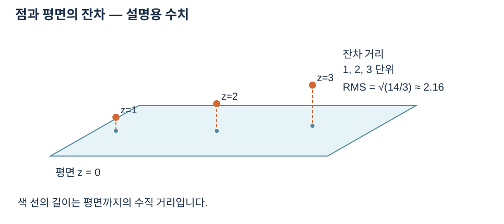

점과 평면의 잔차
평면과 점 사이의 수직 거리를 표시해 잔차의 뜻을 설명합니다.


자료에서 확인할 점
- 세 거리가 1, 2, 3이면 RMS는 √(14/3) ≈ 2.16입니다.
실제 API에 적용하기
기본 estimate_normals 는 중심점과 가장 가까운 유효 이웃을 사용해 PCA 법선을 추정합니다. neighbors는 2 이상이며 이웃 부족이나 퇴화된 이웃은 해당 슬롯을 결측으로 반환합니다. 법선은 viewpoint 쪽을 향하도록 정합니다. PlaneFit 은 normal, offset, inliers, total, rms_error, max_error를 갖고 평면은 normal·p + offset = 0입니다. 임계 거리는 점군 단위이며 경계값도 포함합니다. CylinderFit 은 axis_point, axis_direction, radius와 동일한 개수·오차 필드를 갖습니다. 유한 탐색이 전역 최적해를 보장하지 않으며, 원통은 짧은 호나 부족한 축 방향 범위 등에서 퇴화로 실패할 수 있습니다.
평면의 법선과 offset은 n·p+d=0이라는 하나의 식을 이룹니다. 유효점 p와 단위 법선 n에 대해 |n·p+d|는 평면까지의 거리입니다. 따라서 (0,0,1), -4는 z=4인 평면을 뜻하고 (0,0,-1), 4도 같은 기하를 나타냅니다. inliers와 total을 보면 이 모델이 입력 유효점 중 어느 정도의 지지를 받는지 확인할 수 있습니다.
법선 추정은 중심과 이웃의 분포를 이용하므로 점이 없거나 충분한 방향 정보를 주지 못하면 해당 슬롯이 None입니다. viewpoint는 법선의 부호를 정하지만 데이터가 퇴화한 경우 새로운 기하를 만들어 주지는 않습니다. 원통 피팅은 축의 대표점·단위 방향·반지름과 잔차를 반환합니다. 좁은 호나 축 범위가 부족할 때는 퇴화나 불안정으로 실패할 수 있으므로 수치와 실제 관측 범위를 함께 판독합니다.
법선과 피팅 세부 결과 · PointCloud · 점군에서 함수 선언, 인자와 반환 결과를 확인하세요.
설명과 실행 결과의 범위
수치와 도형은 연결된 계약의 핵심 관계를 설명하는 예입니다. 실제 SDK 출력으로 명시한 자료를 제외하면 실행 결과나 장비 실측으로 해석하지 않습니다. 좌표계·입력 형식·수명과 오류 조건은 관련 API 계약을 확인한 뒤 적용하세요.